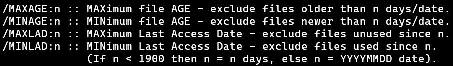

Lesson 7 -
ROBOCOPY Options Part 3: File Selection Options
The file selection options can be used to include or exclude files based on time, name, type of file, certain attributes of files, and other stuff. As usual, we won't talk about all of it, but we will point out some stuff which maybe you'll find useful.
Based on age and access date:
/MINAGE,
/MAXAGE,
/MAXLAD,
/MINLAD
The image shows how the help describes these options, and there isn't too much else to say about them beyond what it does. All four options are used to exclude files.

The
/MAXAGE and
/MINAGE options exclude based on how old the file is.
/MAXAGE excludes files older than the specified age while
/MINAGE excludes files younger than the specified age.
For example, /MAXAGE:10 sets the maximum age of files to be copied to be 10 days. So if a file is 9 days old, it gets copied. A file that is 11 days old is older than the maximum of 10, so gets excluded.
/MINAGE:10 sets the minimum age of files to be copied to 10 days. So if a file is 9 days old, it is not yet old enough (or ripe enough in fruit terms) to be copied so gets excluded. A file that is 11 days old is plenty old and gets copied.
/MINLAD and
/MAXLAD do the same thing but for the last date accessed.
The syntax for all of these is the same: /OPTION:days, that is, you specify the option, then colon, then the number of days. If you need to specify a number of days greater than 1900, then you have to enter a specific date in the YYYYMMDD format.
Exclude based on name or path
/XF
/XD
As promised, here is a better version of exclusion than
/XCOPY provided. We can specify it directly into the option list in the command using the
/XF option for files or the
/XD option for folders.
The syntax is
/XF file or
/XD dirs where
file and
dirs is replaced by what you want to exclude.
For example, to exclude all text documents with extension ".txt" with
/XCOPY, we had to provide a text file with ".txt" written in it. With
ROBOCOPY, we can do the following:
Clear your backup and run this command and you too will discover that any files with the extension ".txt" have not been copied. The
* acts as a "wildcard" or placeholder for whatever the file name might be.
We can also exclude any files with a word in the name or path. For example, in my case, I have a "New Microsoft Word Document.docx" and a "New Microsoft Excel Document.xlsx" in a folder. I can exlude both of these by using
/XF "* Microsoft *.*". Here we use quite a few of the "wildcard"
*'s.
Exclusion Table
The last thing to mention specifically is the block of options shown below.

You don't specify anything with these, you just simply type the option in. So
ROBOCOPY "C:\Users\Rob\Desktop\Original" "C:\Users\Rob\Desktop\Backup" /E /XNwill exclude "newer files." But what does that mean exactly? The table below gives some details on what all the names shown mean when comparing the files between the source and the destination.
| Classification | Option | Present in | Last Modified Times | File Sizes | File Attributes | ||
|---|---|---|---|---|---|---|---|
| source | destination | source | destination | ||||
| Changed |
/XC
|
Y | Y | same | different | - | |
| Newer |
/XN
|
Y | Y | Newer (more recent) | Older | - | - |
| Older |
/XO
|
Y | Y | Older | Newer (more recent) | - | - |
| Extra |
/XX
|
N | Y | - | - | - | |
| Lonely |
/XL
|
Y | N | - | - | - | |
| Same |
/IS
|
Y | Y | same | same | same | |
| Tweaked |
/IT
|
Y | Y | same | same | different | |
Be sure to notice that the "Same" and "Tweaked" files are included, not excluded. So for instance, recall that if we run the our ROBOCOPY command twice with just the /E option, it will skip all files and folders the second time. However, if we add in the /IS option to include same files, we will see in the summary section that it did in fact copy all the files, even though they were all the same.
Suggested File Selection Options
I don't have any suggestions for this one. We won't be using them in the future examples, but feel free to experiment and use whatever works for your purposes.